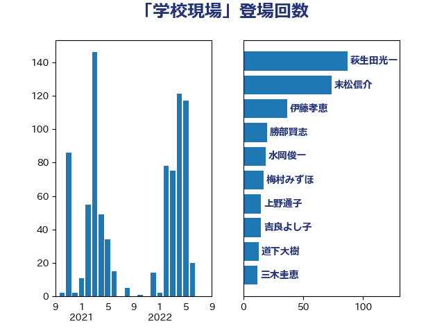

単語「学校現場」

| 萩生田光一 | 自由民主党 | 87 回 |
| 末松信介 | 自由民主党 | 74 回 |
| 伊藤孝恵 | 国民民主党 | 37 回 |
| 勝部賢志 | 立憲民主党 | 20 回 |
| 水岡俊一 | 立憲民主党 | 19 回 |
| 梅村みずほ | 日本維新の会 | 17 回 |
| 上野通子 | 自由民主党 | 15 回 |
| 吉良よし子 | 日本共産党 | 15 回 |
| 道下大樹 | 立憲民主党 | 13 回 |
| 三木圭恵 | 日本維新の会 | 12 回 |
| 荒井優 | 立憲民主党 | 11 回 |
| 谷田川元 | 立憲民主党 | 10 回 |
| 舩後靖彦 | れいわ新選組 | 8 回 |
| 菅義偉 | 自由民主党 | 8 回 |
| 野田聖子 | 自由民主党 | 8 回 |
| 笠浩史 | 無所属 | 7 回 |
| 西岡秀子 | 国民民主党 | 7 回 |
| 青山大人 | 立憲民主党 | 7 回 |
| 城井崇 | 立憲民主党 | 6 回 |
| 河野義博 | 公明党 | 6 回 |
| 福島みずほ | 社会民主党 | 6 回 |
| 鰐淵洋子 | 公明党 | 6 回 |
| 斎藤嘉隆 | 立憲民主党 | 5 回 |
| 櫻井周 | 立憲民主党 | 5 回 |
| 漆間譲司 | 日本維新の会 | 5 回 |
| 藤田文武 | 日本維新の会 | 5 回 |
| 佐々木さやか | 公明党 | 4 回 |
| 大岡敏孝 | 自由民主党 | 4 回 |
| 山崎正恭 | 公明党 | 4 回 |
| 掘井健智 | 日本維新の会 | 4 回 |
| 朝日健太郎 | 自由民主党 | 4 回 |
| 横沢高徳 | 立憲民主党 | 4 回 |
| 片山大介 | 日本維新の会 | 4 回 |
| 石橋林太郎 | 自由民主党 | 4 回 |
| 丹羽秀樹 | 自由民主党 | 3 回 |
| 古川禎久 | 自由民主党 | 3 回 |
| 堀場幸子 | 日本維新の会 | 3 回 |
| 堂故茂 | 自由民主党 | 3 回 |
| 安江伸夫 | 公明党 | 3 回 |
| 小泉進次郎 | 自由民主党 | 3 回 |
| 小西洋之 | 立憲民主党 | 3 回 |
| 山田賢司 | 自由民主党 | 3 回 |
| 岩渕友 | 日本共産党 | 3 回 |
| 後藤田正純 | 自由民主党 | 3 回 |
| 根本幸典 | 自由民主党 | 3 回 |
| 横山信一 | 公明党 | 3 回 |
| 池田佳隆 | 自由民主党 | 3 回 |
| 渡辺創 | 立憲民主党 | 3 回 |
| 牧義夫 | 立憲民主党 | 3 回 |
| 田村まみ | 国民民主党 | 3 回 |
| 稲田朋美 | 自由民主党 | 3 回 |
| 菊田真紀子 | 立憲民主党 | 3 回 |
| 上杉謙太郎 | 自由民主党 | 2 回 |
| 吉田とも代 | 日本維新の会 | 2 回 |
| 吉田はるみ | 立憲民主党 | 2 回 |
| 嘉田由紀子 | 無所属 | 2 回 |
| 國重徹 | 公明党 | 2 回 |
| 土屋品子 | 自由民主党 | 2 回 |
| 寺田学 | 立憲民主党 | 2 回 |
| 山田勝彦 | 立憲民主党 | 2 回 |
| 岸田文雄 | 自由民主党 | 2 回 |
| 柚木道義 | 立憲民主党 | 2 回 |
| 柴田巧 | 日本維新の会 | 2 回 |
| 梶山弘志 | 自由民主党 | 2 回 |
| 藤井比早之 | 自由民主党 | 2 回 |
| 西村康稔 | 自由民主党 | 2 回 |
| 遠藤敬 | 日本維新の会 | 2 回 |
| 青山周平 | 自由民主党 | 2 回 |
| 高木かおり | 日本維新の会 | 2 回 |
| 三浦信祐 | 公明党 | 1 回 |
| 上川陽子 | 自由民主党 | 1 回 |
| 下村博文 | 自由民主党 | 1 回 |
| 中曽根康隆 | 自由民主党 | 1 回 |
| 二階俊博 | 自由民主党 | 1 回 |
| 井上信治 | 自由民主党 | 1 回 |
| 伊佐進一 | 公明党 | 1 回 |
| 伊藤孝江 | 公明党 | 1 回 |
| 加田裕之 | 自由民主党 | 1 回 |
| 吉川元 | 立憲民主党 | 1 回 |
| 吉田統彦 | 立憲民主党 | 1 回 |
| 吉良州司 | 無所属 | 1 回 |
| 和田政宗 | 自由民主党 | 1 回 |
| 国光あやの | 自由民主党 | 1 回 |
| 堤かなめ | 立憲民主党 | 1 回 |
| 塩村あやか | 立憲民主党 | 1 回 |
| 大塚耕平 | 国民民主党 | 1 回 |
| 大石あきこ | れいわ新選組 | 1 回 |
| 小倉將信 | 自由民主党 | 1 回 |
| 小沢雅仁 | 立憲民主党 | 1 回 |
| 山下雄平 | 自由民主党 | 1 回 |
| 岡本あき子 | 立憲民主党 | 1 回 |
| 川田龍平 | 立憲民主党 | 1 回 |
| 平井卓也 | 自由民主党 | 1 回 |
| 庄子賢一 | 公明党 | 1 回 |
| 後藤茂之 | 自由民主党 | 1 回 |
| 木村英子 | れいわ新選組 | 1 回 |
| 枝野幸男 | 立憲民主党 | 1 回 |
| 柳ヶ瀬裕文 | 日本維新の会 | 1 回 |
| 沢田良 | 日本維新の会 | 1 回 |
| 河西宏一 | 公明党 | 1 回 |
| 浮島智子 | 公明党 | 1 回 |
| 田野瀬太道 | 無所属 | 1 回 |
| 石垣のりこ | 立憲民主党 | 1 回 |
| 石川博崇 | 公明党 | 1 回 |
| 石川大我 | 立憲民主党 | 1 回 |
| 石川香織 | 立憲民主党 | 1 回 |
| 竹内真二 | 公明党 | 1 回 |
| 自見はなこ | 自由民主党 | 1 回 |
| 舟山康江 | 国民民主党 | 1 回 |
| 芳賀道也 | 国民民主党 | 1 回 |
| 谷合正明 | 公明党 | 1 回 |
| 金子恭之 | 自由民主党 | 1 回 |
| 金村龍那 | 日本維新の会 | 1 回 |
| 鈴木俊一 | 自由民主党 | 1 回 |
| 鈴木義弘 | 国民民主党 | 1 回 |
| 鎌田さゆり | 立憲民主党 | 1 回 |
| 高橋光男 | 公明党 | 1 回 |
| 高野光二郎 | 自由民主党 | 1 回 |
| 高階恵美子 | 自由民主党 | 1 回 |